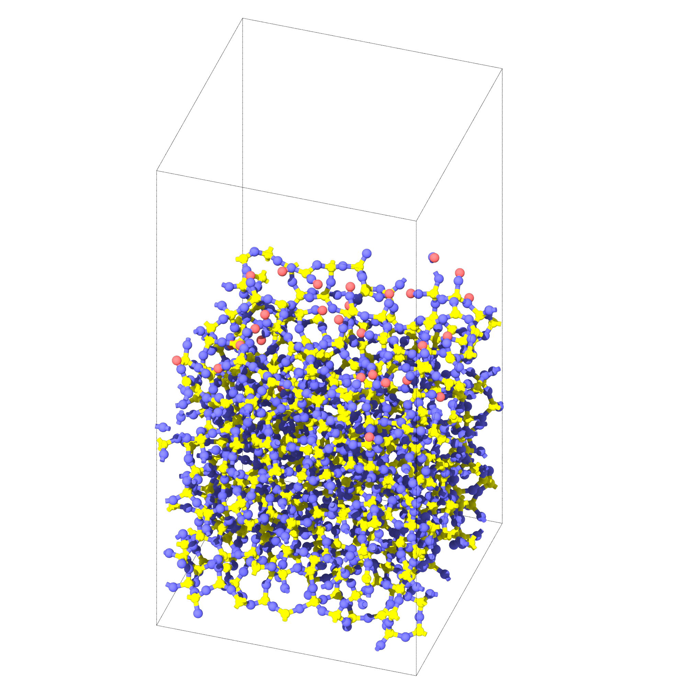
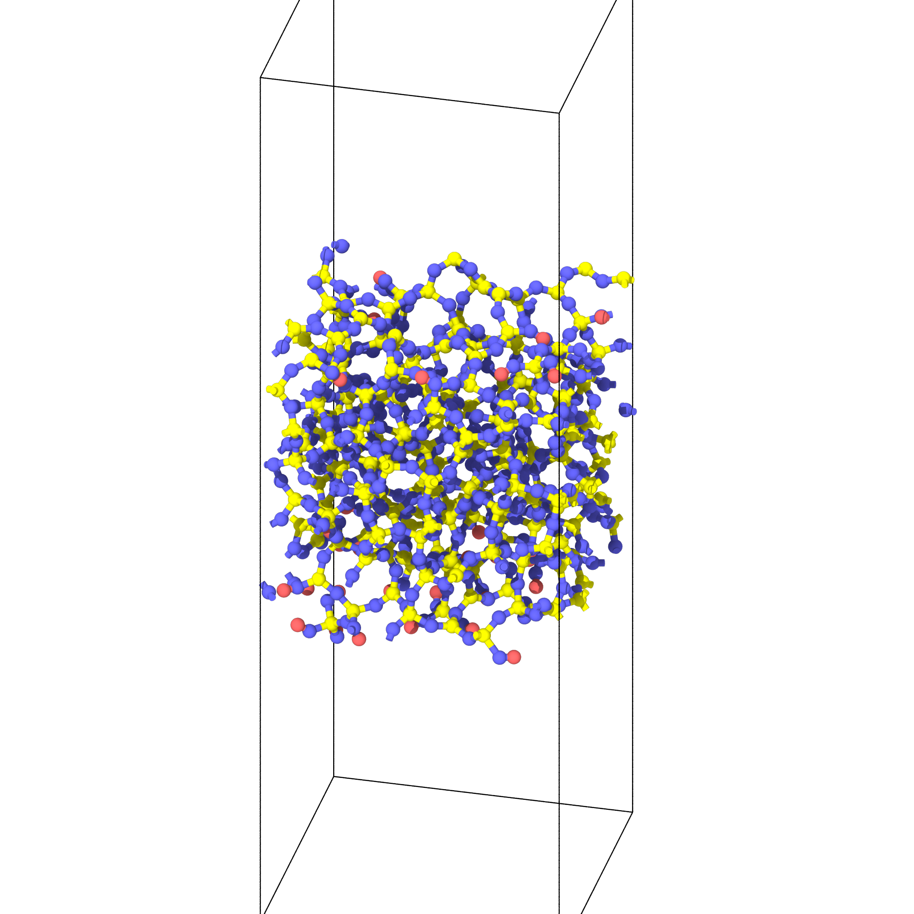

Interface Builder
Generating passivated silica surface

from interface_builder import Silica
# 4 --> 28.48x28.48x28.48
silica_params = {
'lx' : 4,
'ly' : 4,
'lz' : 4,
'vacuum' : 30,
'filename' : 'silica_amorphous.data',
'output_folder' : f'./annealed_T300K/amorphous_passivated_{indx}',
'input_folder' : None,
'sio2_potential' : './data/SiO2.vashishta',
'sio2_h2o_potential' : "./data/SiOH2O_199_16_adjusted.vashishta",
'h2o_potential' : './data/potential_nm_0_0.mod'
}
# initilize the silica system
silica = Silica(**silica_params)
# Replicate [lx,ly,lz], then do initial annealing
silica_file = silica.build_amorphous(16, "lmp", run=True)
silica_surface = silica.add_vacuum(silica_file, "silica_surface+vacuum.data")
silica_relax = silica.thermalize(silica_surface, time=200, temp=300,
output_filename="amorphous_surface_thermalized-300.data",
mpirun_n=16, lmp_exec="lmp", run=True)
minimized_silica = silica.minimize_sio2(silica_relax, mpirun_n=16, lmp_exec="lmp", run=True)
passivated_silica = minimized_silica
# Recursively passivate the system
for _ in range(1):
passivated_silica = silica.passivate(passivated_silica, 5, 'passivated_silica.data',
water_thickness=5, mpirun_n=1, lmp_exec='lmp_usc', run=True)
# Shift the origin of silica by 2 angstrom, to avoid dangling atom on the ceiling of the cell.
shifted_z_silica = silica.shift_z_origin(passivated_silica, 2, "silica_shifted_z.data")
silica.resize_z(shifted_z_silica, 90)

Generate surface for heat of immersion calculation
from interface_builder import Silica
silica_params = {
'lx' : 3,
'ly' : 3,
'lz' : 3,
'filename' : 'silica_amorphous.data',
'output_folder' : f'heatofimmersion5',
'sio2_potential' : 'SiO2.vashishta',
'sio2_h2o_potential' : "potential_hoga_0_0.mod",
'h2o_potential' : "potential_nm_0_0.mod",
}
# initilize the silica system
silica = Silica(**silica_params)
# replicate [lx,ly,lz], then do initial annealing
silica_file = silica.build_amorphous(16, "lmp", run=False)
N = int(586/2) # number of water, N water molecule on both sides
dH_imm = silica.get_heat_of_immersion(silica_file,
num_h2o=N,
h2o_therm_time=20,
sio2_therm_time=100,
output_filename="water-silica_system.data",
mpirun_n=16,
run=True
)
print("Calculated heat of immersion:", dH_imm, "J/m^2")